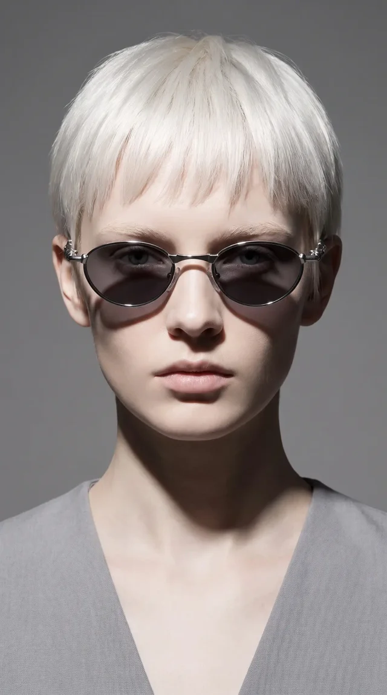
El Yapımı Gözlük — Vine Koleksiyonu No.07
FOLDSUN
Vine Koleksiyonu
Tek siluet. Altı ton. İnce metalden dökülmüş, burma dal desenli bir tapa.
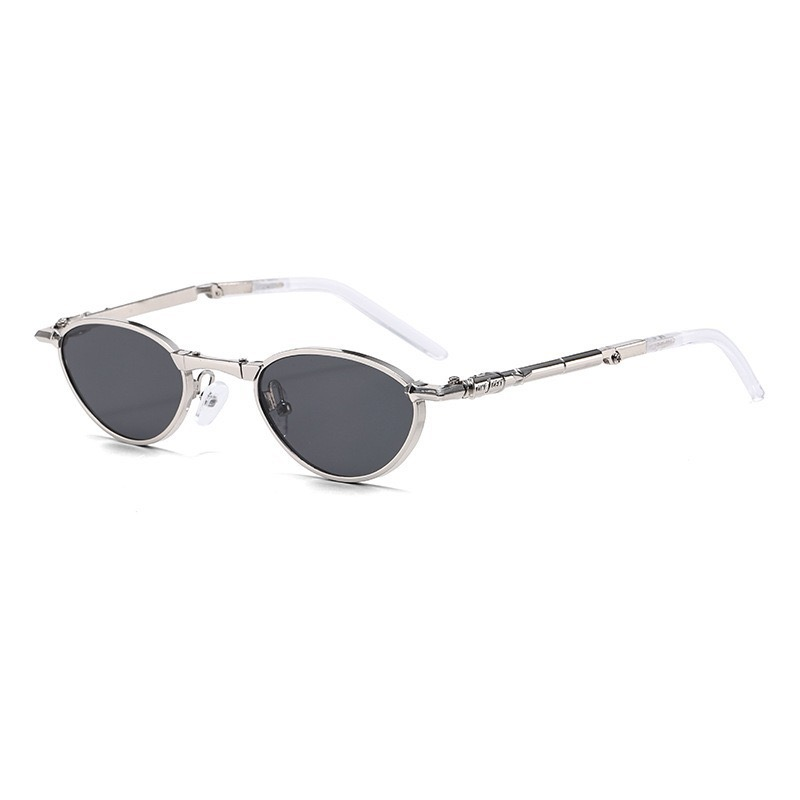
Siluet
Tek bir detay
üzerine kurulmuş çerçeve.
Her Vine tapası elde bitirilir — antika kuyumculuktan ilham alan burma dal motifi, ince metalden dökülüp menteşeye yerleştirilir. Oval cam, tel inceliğindeki bir çerçevenin içine oturur; böylece hiçbir şey çevrelediği yüzle yarışmaz.
- ŞekilOval, ince tel çerçeve
- MenteşeEl dökümü burma motif
- YapıMasif pirinç, kaplama
- UyumUnisex, tek beden
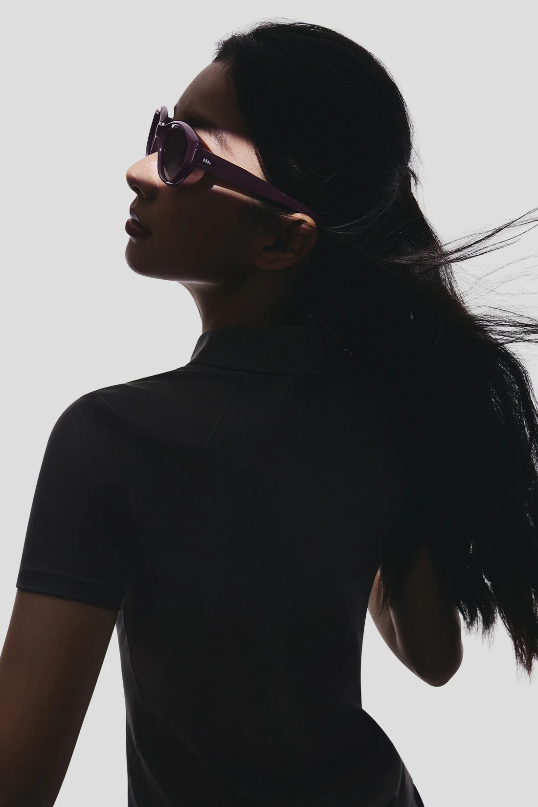
Kampanya
Işığa dönük,
rüzgâra aldırmadan.
Oniks
Saf ve yalın. Gölgeden yontulmuş bir siluet, parlak gümüşle bir arada tutulur.
Satın Al ₺2.499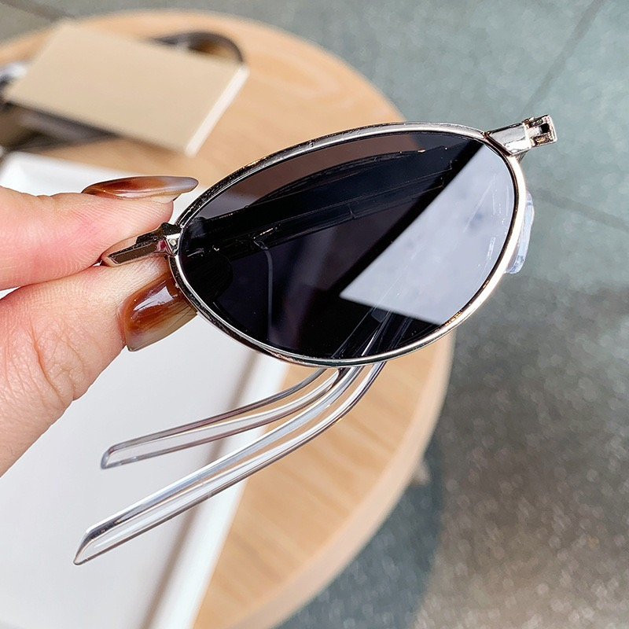
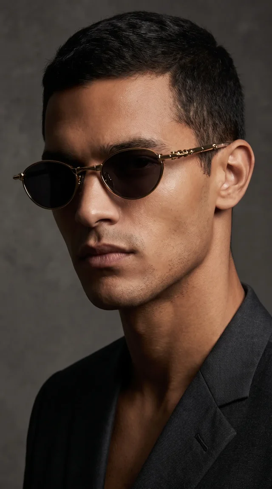
Kara Altın
Karanlıkta saklı bir sıcaklık. Altınla çevrili siyah cam, geceye göre kesildi.
Satın Al ₺2.499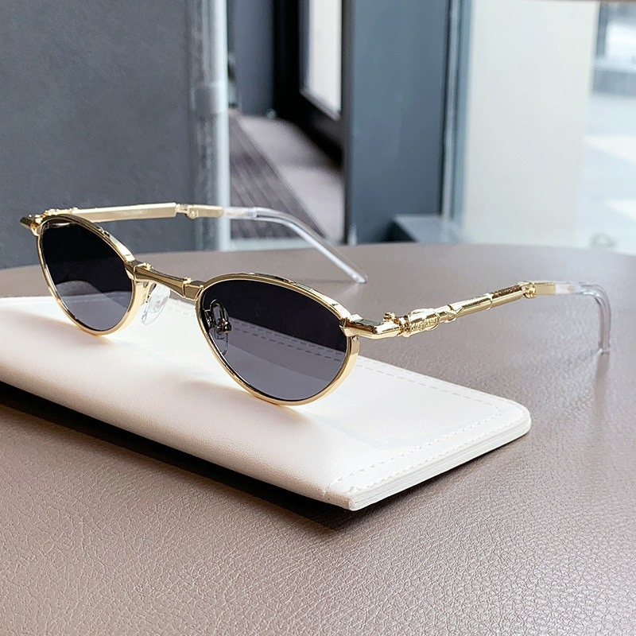
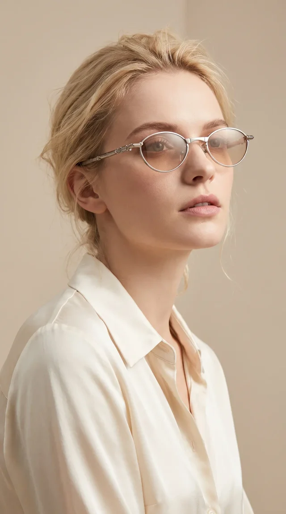
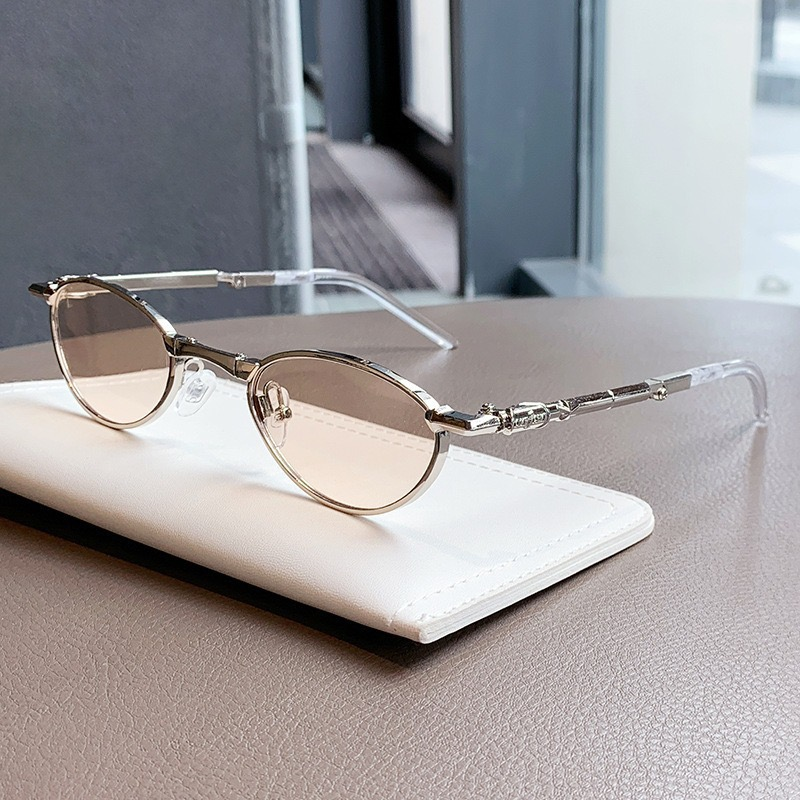
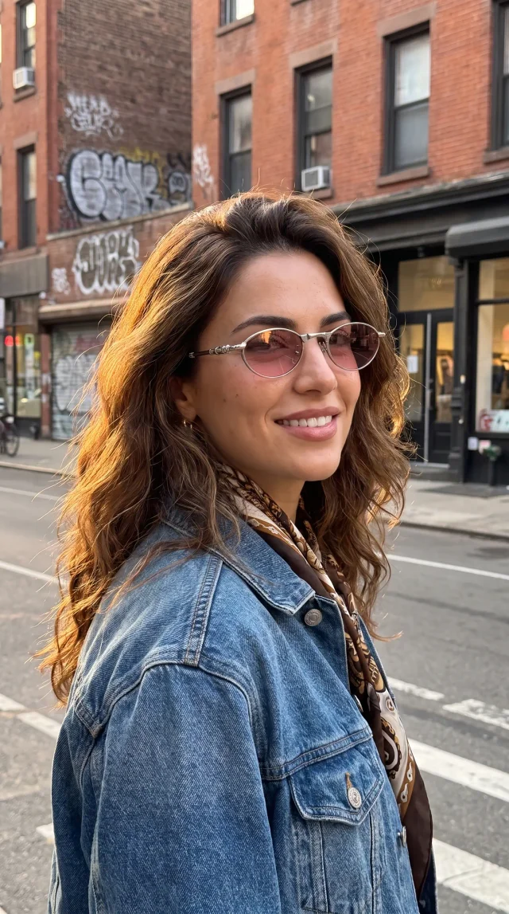
Toz Pembe
Yumuşak hatlar, keskin sezgi. Altın saatin sokaklarına pembe bir cam.
Satın Al ₺2.499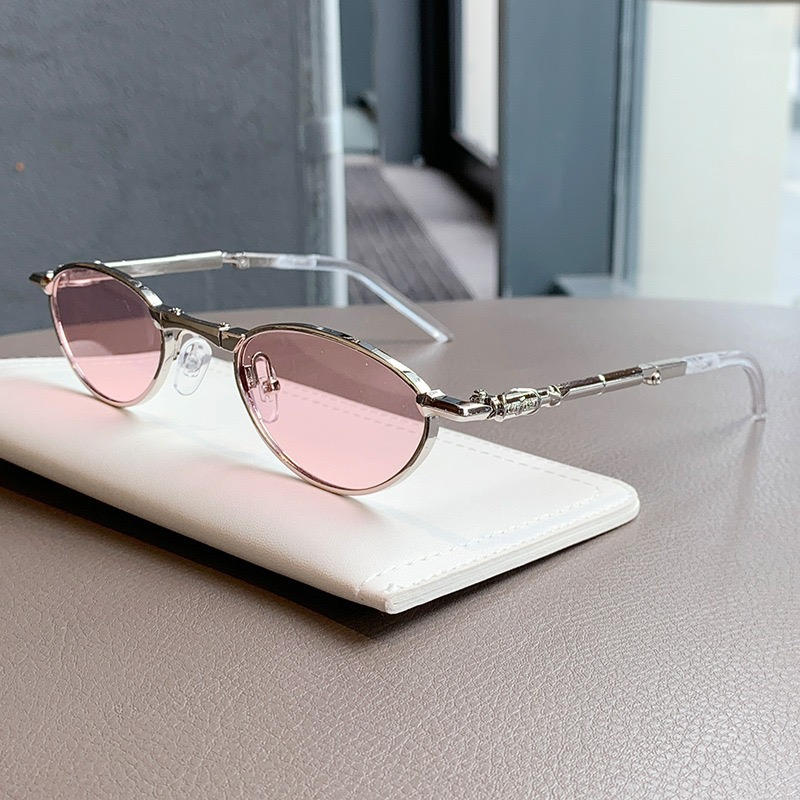
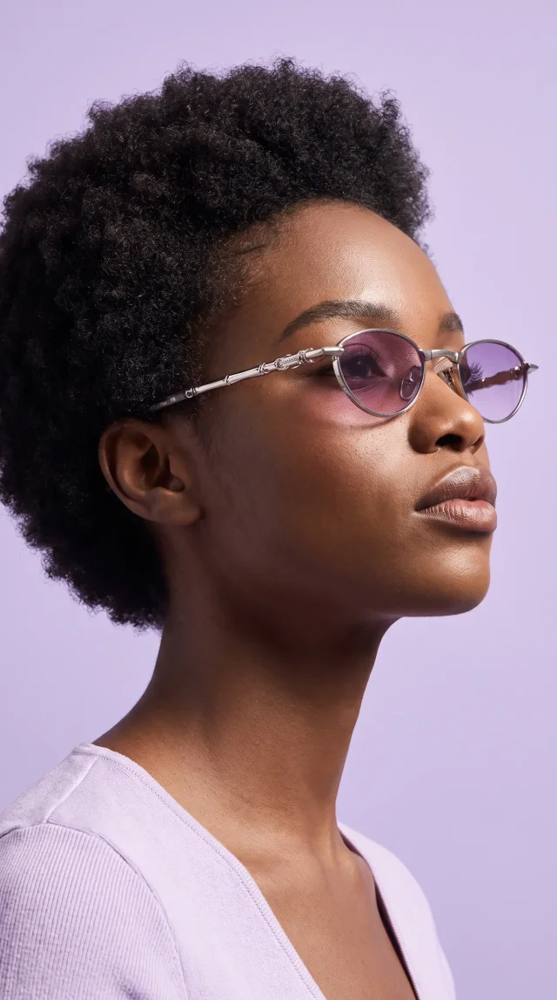
Orkide
Mor, bir nefes ortasında yakalanmış. Sessiz bir özgüvenle taşınan soğuk bir ton.
Satın Al ₺2.499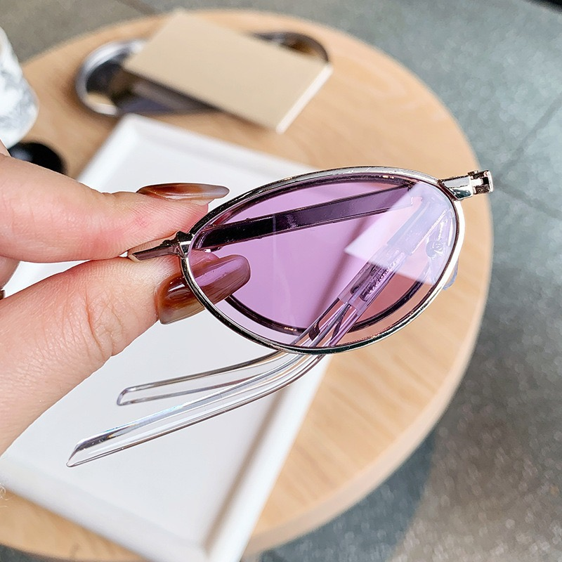
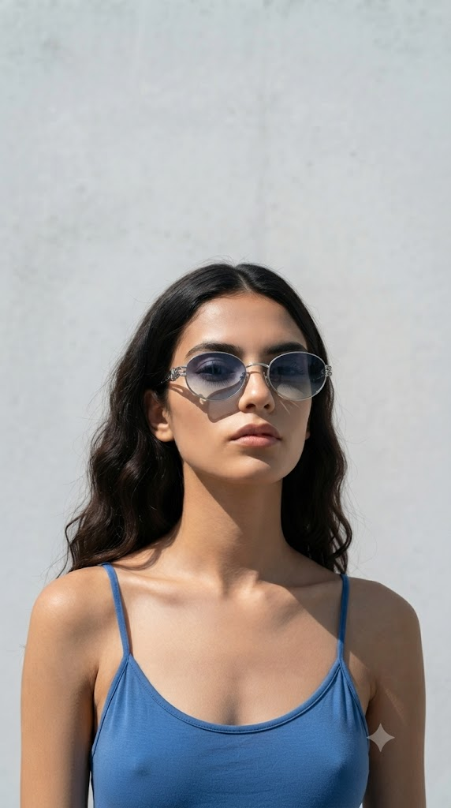
Buzul
Gökyüzünün çelikle buluştuğu yer. Kuzey ışığından süzülmüş bir gradyan.
Satın Al ₺2.499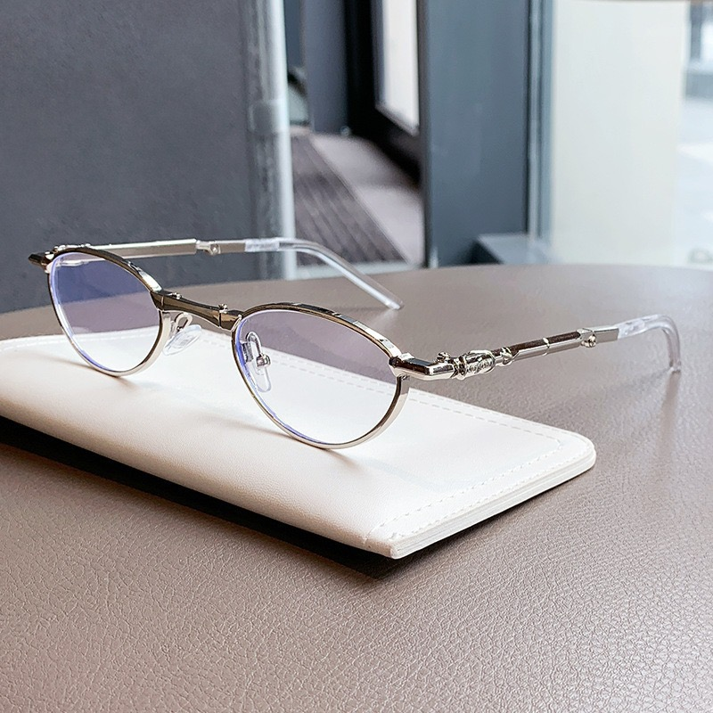
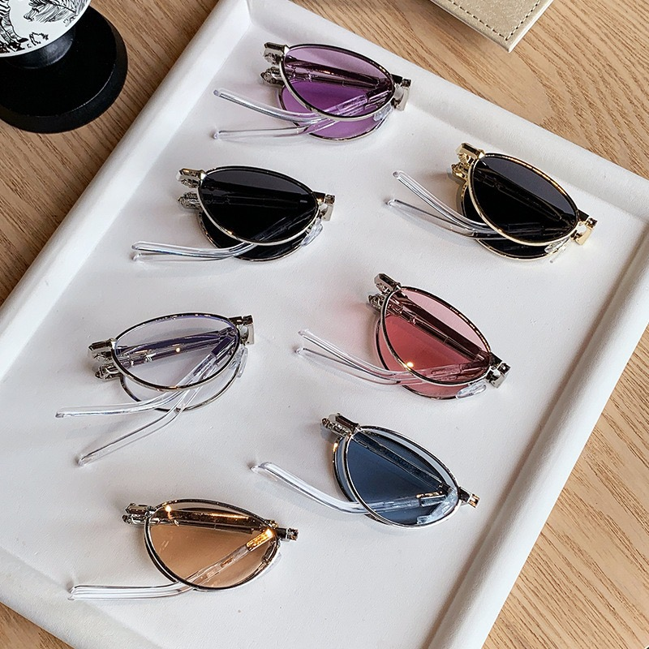
Tüm Spektrum
Tek çerçeve.
Her ruh hali.
Topluluktan
Bizden değil,
onlardan dinleyin.
“Toplantıya girerken bile üstümden çıkarmadım.”— Selin
“Menteşedeki burma detayı için almıştım, asıl rengine aşık oldum.”— Deniz, Konyak sahibi
“Bu kadar hafif olacağını beklemiyordum, takıp unutuyorum.”— Ece, Orkide sahibi
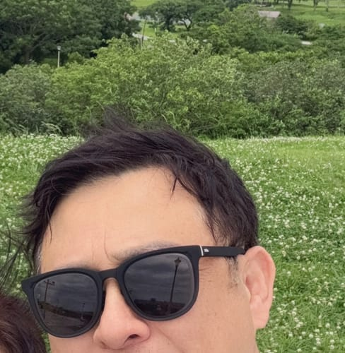
“Pazar sabahı yürüyüşlerinin ayrılmaz parçası oldu.”— Kaan
“Aradığım gri tam buydu, başka hiçbir yerde bulamamıştım.”— Ayla, Buzul sahibi
“Anneme hediye almıştım, şimdi kendime bir tane daha sipariş ediyorum.”— Mert, Kara Altın sahibi
“Kutudan çıkardığım an bile bir hediye gibi hissettirdi.”— Zeynep
“İş seyahatlerinde çantamdan hiç eksik etmiyorum.”— Barış
“Arkadaşım ‘nereden aldın’ diye sorunca gururla söyledim.”— Elif
“Yüzüme bu kadar iyi oturan bir çerçeve ilk defa buldum.”— Onur
“Konser gecesinde bile takmaktan vazgeçmedim.”— Aslı
“Numaralı cam taktırdım, sonuç beklediğimden çok daha şık.”— Cem
“Toz Pembe tonunu görür görmez sepete attım.”— Nazlı
“Dört ay oldu, hâlâ ilk günkü gibi duruyor.”— Burak
“Düğünde takı gibi durdu, gelin bile nereden aldığımı sordu.”— İrem
“Sahile giderken artık çantada değil, üzerimde.”— Tolga
“Annem bile beğenip kendine bir tane istedi.”— Sena
“Ofiste herkes aynı soruyu soruyor: bu nereden?”— Yusuf
“Menteşedeki detayı görünce başka marka aramayı bıraktım.”— Pelin
“Yol kenarında bozulan güneşliğime göre çok daha dayanıklı çıktı.”— Emre
“Yaz boyu hiç çıkarmadım, gözlük izini bile gururla taşıyorum.”— Gizem
“Kutusu bile saklanacak kadar güzeldi.”— Kerem
“Orkide tonunu herkes farklı bir şeyle karıştırıyor, hep iltifat alıyorum.”— Ceren
“Babamın hediyesiydi, kendisi de bayıldı.”— Ozan
“Bu kadar hafif bir çerçeve beklemiyordum, denizde bile takıyorum.”— Naz
“İlk gördüğümde vintage bir parça sandım, öyle de kaldı gözümde.”— Alp